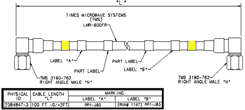

Operating Documentation
Direction 5670006, Rev# 1
Discovery MR750w GEM Service Methods
Module Version 2.0, Version Date 11/6/08
Operating Documentation |
| ||||
| Do NOT subject the LMR-600FR Cable to a bend radius less than 3 inches (75 mm). The cable will be permanently damaged if it is kinked by a bend radius less than the specified minimum. | ||||
The 4 kW (CPC) and 8 kW (AMT/Hurley) MNS Amplifier Upgrade Kits both come with the same long Times Microwave Cable, 2384847-3 (Runs 1137, 1146 and 1147). This cable will be cut to length and terminated for routing in the Equipment and Scan Rooms. The remaining connectors, fasteners and labels will be installed as directed in the steps that follow. See Illustration 1 for a diagram of the Times Microwave Cable.
Illustration 1: 2384847-3 (Times Microwave Cable)

Cables will be routed and connected as indicated in the following steps:
Connect the extension cable Run 1158 at the end marked “(Run #1158) MR1-CPC-J2” to J2 in the rear of the 4 kW (CPC) MNS Amplifier.
Connect the end of the 100-foot Transmit Cable (2384847-3) nearest the end with label “PP1-J83” to the Penetration Panel on the side of the Equipment Room. Attach the label “Run #1137 PP1-J83” near the end that is connected to J83 of the Pen Panel.
Run this cable to the Accessories Cabinet, and cut it long enough to attach to Run 1158. Refer to Times Connector Installation procedures provided with the cables for cutting information. Refer to Section 2.3 for termination procedure of the cut end.
Connect the newly terminated cable end to the open end of Run 1158.
Move remainder of the Transmit Cable 2384847-3 to the Scan Room, and connect the end labeled “(Run #1147) PP1-J83” to J83 of the Penetration Panel inside the Scan Room.
Route to the Rear Pedestal Take-up Bracket J3. Determine if any take-up slack is needed and cut to length. Refer to Times Connector Installation procedures provided with cables for cutting information. Refer to Section 2.3 for termination procedure of the cut end.
Connect the newly terminated end to the Rear Pedestal Take-up Bracket J3.
Connect the extension cable Run 1159 at the end marked “(Run #1159) MR9-J4” to J4 of the AMT MNS Amplifier.
Connect the end of the 100-foot Transmit Cable (2384847-3) nearest the end with label “PP1-J83” to the Penetration Panel on the side of the Equipment Room. Attach the label “Run #1146 PP1-J83” near the end that is connected to J83 of the Pen Panel.
Run the Transmit Cable to the AMT MNS Amplifier, and cut it long enough to attach to Run 1159. Refer to Times Connector Installation procedures provided with the cables for cutting information. Refer to Section 2.3 for termination procedure of the cut end.
Connect the newly terminated cable end to the open end of Run 1159.
Move remainder of Transmit Cable 284847-3 to Scan Room, and connect the end labeled “(Run #1147) PP1-J83” to J83 of the Penetration Panel inside the Scan Room.
Route to the Rear Pedestal Take-up Bracket J3. Determine if any take-up slack is needed and cut to length. Refer to Times Connector Installation procedures provided with cables for cutting information. Refer to Section 2.3 for termination procedure of the cut end.
Connect the newly terminated end to the Bracket J3.
Perform the following steps for terminating and connecting the RF cables in the Equipment and Scan Rooms.
Refer to Times Connector Installation procedures provided with cables for information on installing a Straight Male N Connector (2352195) on each end of the RF Cable. Use provided LMR600 Stripping Tool (2352193).
Connect Equipment Room end to Run 1158/1159 extension cable.
Connect Scan Room end to MG3A17-J3 at Interface bracket on Rear Pedestal.
In the Equipment Room, attach label “Run #1137 Connect to Run 1158” (2384852-5) to cable near to the newly terminated cable end.
In the Scan Room, attach label “Run #1147 MG3A17-J3” to the cable near to the newly terminated cable end.
Return to 3T MNS Installation.